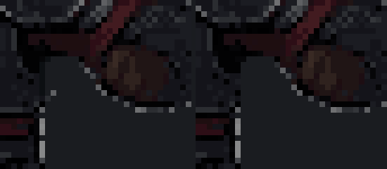
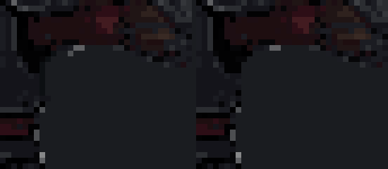
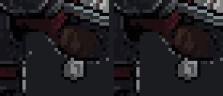
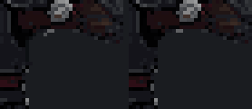
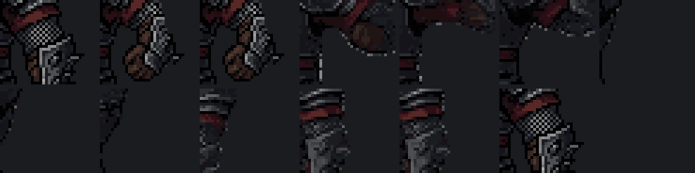

front_l/SwordTECHNICALLY_COMPLETE · VISUAL_REVIEW_REQUIRED · PENDING_CREATOR
Limitação declarada: o DEV não recebeu percepção visual. Tudo aqui vem de medição de pixels (Pillow) e autoria Lua no Aseprite. Nada foi “visto”. A coluna da esquerda é o candidato V6 escalonado; a da direita é o V7. Ampliação 8x com vizinho mais próximo, recorte x140..174 / y106..136.





| Q | x | y | antes | L | depois | L | motivo |
|---|---|---|---|---|---|---|---|
| F03 | 148 | 116 | rgb(12,15,18) | 14.6 | rgb(6,6,8) | 6.1 | native x148/y116; V6 had repainted ink plate |
| F03 | 147 | 117 | rgb(12,15,18) | 14.6 | rgb(2,2,3) | 2.1 | native x147/y117 |
| F03 | 147 | 118 | rgb(12,15,18) | 14.6 | rgb(2,2,3) | 2.1 | native x147/y118 |
| F03 | 147 | 119 | rgb(12,15,18) | 14.6 | rgb(20,20,26) | 20.4 | native x147/y119 |
| F03 | 147 | 120 | rgb(12,15,18) | 14.6 | rgb(27,28,34) | 28.2 | native x148/y120 (native x147 run would reach 4 identical) |
| F03 | 147 | 121 | rgb(12,15,18) | 14.6 | rgb(20,20,26) | 20.4 | native x147/y121 |
| F03 | 147 | 122 | rgb(12,15,18) | 14.6 | rgb(0,0,1) | 0.1 | native x148/y122; deepest point of the crease |
| F03 | 149 | 122 | rgb(95,96,99) | 96.0 | transparent | - | orphan 95,96,99 with zero opaque 8-neighbours after V6 erasure |
| F03 | 148 | 123 | rgb(43,45,49) | 44.9 | transparent | - | restores monotone left boundary of the opening (was 2b2d31) |
| F04 | 149 | 115 | rgb(12,15,18) | 14.6 | rgb(0,0,1) | 0.1 | native x149/y115 |
| F04 | 148 | 116 | rgb(12,15,18) | 14.6 | rgb(6,6,8) | 6.1 | native x148/y116 |
| F04 | 147 | 117 | rgb(12,15,18) | 14.6 | rgb(2,2,3) | 2.1 | native x147/y117 |
| F04 | 147 | 118 | rgb(12,15,18) | 14.6 | rgb(2,2,3) | 2.1 | native x147/y118 |
| F04 | 147 | 119 | rgb(12,15,18) | 14.6 | rgb(20,20,26) | 20.4 | native x147/y119 |
| F04 | 147 | 120 | rgb(12,15,18) | 14.6 | rgb(27,28,34) | 28.2 | native x148/y120 (native x147 run would reach 4 identical) |
| F04 | 147 | 121 | rgb(12,15,18) | 14.6 | rgb(20,20,26) | 20.4 | native x147/y121 |
| F04 | 147 | 122 | rgb(12,15,18) | 14.6 | rgb(2,2,3) | 2.1 | native x148/y122 |
| F04 | 152 | 115 | rgb(77,79,82) | 78.8 | transparent | - | isolated 77,79,82 island, only the top edge touches the body |
| F04 | 148 | 123 | rgb(20,20,26) | 20.4 | transparent | - | restores monotone left boundary (was 20,20,26) |
84 arquivos idênticos byte a byte fora do patch; 19 pixels alterados e nenhum outro;
39/39 exportações de weaponBack/weaponFront/handFront idênticas ao V6 depois de
reabrir o mestre; fronteira esquerda da abertura monótona; zero pixels soltos.
Ver verification-v7.json e ../../characters/orc-v1/source/combat-recovery-v7/frontal/front_l-Sword-full/clip.json.